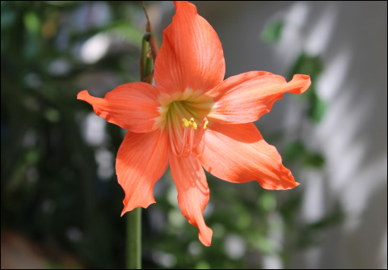

Lírio vermelho
(3 avaliações)
Imponente e apaixonante, o Lírio Vermelho é uma flor que simboliza amor e desejo. Com suas pétalas exuberantes e cores vibrantes, ele se destaca em qualquer arranjo floral, trazendo um toque de elegância e sofisticação. Ideal para ocasiões especiais, como aniversários e celebrações românticas, o lírio vermelho é uma escolha marcante que encanta e transforma ambientes com sua beleza intensa e aroma envolvente.
R$ 39.99
estou ciente com os horarios de entrega
consultar frete